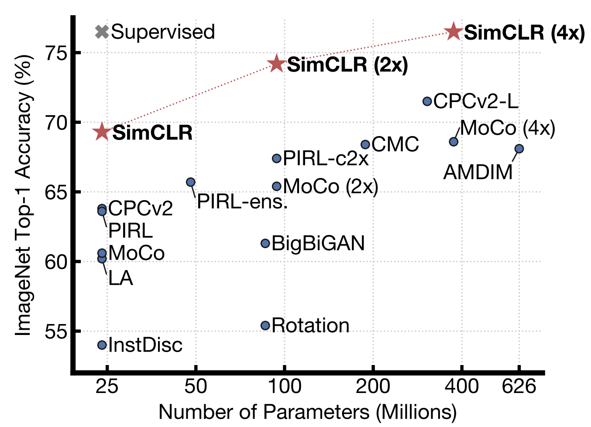

SimCLR: (almost) beating Supervised Learning SimCLR.png Key Points: Unsupervised Performance almost same as supvervised performance Unsupervised performance scales with more parameters The paper: Open PDF Video: and this: Blog Posts: https://amitness.com/2020/03/illustrated-simclr/